À l’exemple 7.1.20 de la section précédente, on a remarqué qu’on pouvait décrire le même graphe de plusieurs façons. On aimerait donc pouvoir se demander si, lorsqu’on considère deux graphes, est-ce que ceux-ci sont équivalents.
Pour cela, on doit développer le concepte d’isomorphisme. Ce concepte est présent dans toutes les branches des mathématiques. En fait, ce concepte est tellement fondamental en mathématique, que les mathématiciens on même généraliser cette idée au point de définir toutes les branches des mathématiques à l’aide de mprphisme! (voir la théorie des catégorie).
Avant de parler d’isomorphisme, on va définir certaines caractéristiques des graphes, qui nous permetrons, entre-autre, de différencier certains graphes les uns des autres.
Sous-section7.2.1Graphes bipartis et coloration des graphes
Définition7.2.1.Graphe biparti.
Une graphe \(G=(S,A)\) est appelé un graphe biparti si on peut écrire l’ensemble des sommet \(S\) comme l’union disjointe de deux sous-ensemble \(S_1\) et \(S_2\) tels que chaque arête de \(G\) a une extrémité dans \(S_1\) et une extrémité dans \(S_2\text{.}\)
Ainsi, \(G\) est biparti si \(S=S_1\cup S_2,\) avec \(S_1\cap S_2=\emptyset,\) et si \(a=\{s,t\}\in\,A,\) alors \(s\in\, S_1\) si et seulement si \(t\in\,S_2\text{.}\)
Pour déterminer si un graphe est bipartie, on choisir aléatoirement un premier sommet \(s\) et décider de mettre \(s\) dans \(S_1\text{.}\)
Ensuite, on place tout le voisinage de \(s\) dans \(S_2\text{.}\) Pour chacun des sommets ajoutés dans \(S_2\text{,}\) on place leur voisinage dans \(S_1\text{.}\)
On poursuit cette procédure jusqu’à ce que chaque sommet soit dans un seul des \(S_i\) (et donc que le graphe est biparti), ou jusqu’à ce qu’un sommet soit dans \(S_1\) et \(S_2\) (et donc le graphe n’est pas biparti).
En procédant ainsi, on peut voir que le graphe \(G\) ci-dessous est biparti, mais pas le graphe \(H\text{.}\)
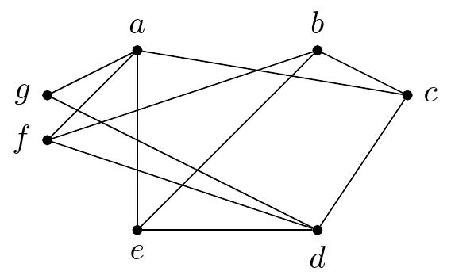(a)Le graphe \(G\) est bipartie
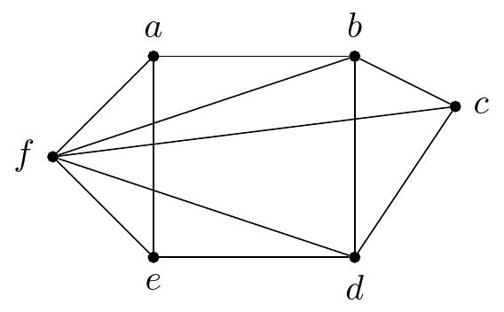(b)Le graphe \(H\) n’est pas biparti
Figure7.2.5.Deux graphes bipartis?
Pour illustrer la procédure utilisée dans l’exemple précédent, on peut colorié les sommets d’un graphe, en s’assurant que chaque sommets qui sont voisins soient d’une couleur différente.
Un graphe sera alors biparti si et seulement si on peut faire une telle coloration avec deux couleurs. De façon général, on peut résoudre certains procblèmes ou bien différentier certains graphes en sachant le nombre de couleurs minimal qu’on doit utiliser pour colorier un graphe.
Définition7.2.6.Coloration d’un graphe.
La coloration d’un graphe consiste à attribuer une couleur à chacun de ses sommets de manière à ce que deux somments adjacents soient d’une couleur différente.
Plus formellement, on peut définir une coloration d’un graphe \(G=(S,A)\) comme une fonction \(f:S\rightarrow C,\) ou \(C\) est un ensemble de couleurs, tels que si \(\{s,t\}\) est une arête de \(G,\) alors \(f(s)\neq f(t)\text{.}\)
En essayant de colorier les graphes de l’exemple 7.2.4 avec un minimum de couleur, on onbtient les colorations suivantes.
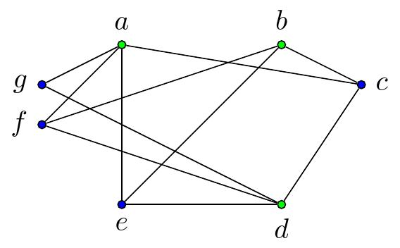(a)Le graphe \(G\) est bipartie
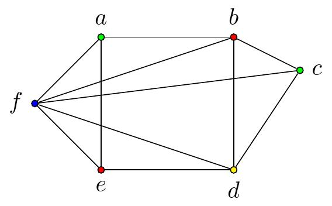(b)Le graphe \(H\) n’est pas biparti
Figure7.2.11.Deux graphes bipartis? Prise deux.
On voit donc que \(G\) est biparti, mais pas \(H\text{.}\)
Sous-section7.2.2Chemins et circuits
Définition7.2.12.
Soit \(n\) un entier naturel et \(G\) un graphe. Un chemin de longueur \(n\) allant du sommet \(s\) au sommet \(t\) est une suite de sommets de \(G\)\(s_0,\,s_1,\,s_1,\,\dots,\,s_n\) tels que:
\(s_0=s,\)\(s_n=t\text{;}\)
\(\{s_0,s_1\},\,\{s_1,s_2\},\,\dots,\,\{s_{n-1},s_n\}\) sont des arêtes de \(G\text{.}\)
Un chemin sera dit simple s’il traverse une arête au plus une fois.
Définition7.2.13.
Soit \(n\) un entier naturel et \(G\) un graphe. Un circuit de longueur \(n\) est un chemin allant de \(s\) à \(t\) tel que \(s=t\text{.}\)
Sous-section7.2.3Chemins et circuits eulériens
Définition7.2.14.
Un chemin eulérien d’un graphe \(G\) est un chemin simple allant de \(s\) à \(t\neq s \) passant par toutes les arêtes de \(G\text{.}\)
Un circuit eulérien d’un graphe \(G\) est un circuit simple passant par toutes les arêtes de \(G\text{.}\)
Le chemin \(a,c,e,d,c,b,a,d,b\) est un chemin eulérien du graphe \(G_1\text{.}\)
Le chemin \(a,b,c,d,b\) est un chemin eulérien du graphe \(G_2\text{.}\)
Le circuit \(a,b,e,d,c,e,a\) est un circuit eulérien du graphe \(G_3\text{.}\)
Le graphe \(G_4\) ne possède ni un chemin eulérien, ni un circuit eulérien.
Le graphe \(G_5\) ne possède ni un chemin eulérien, ni un circuit eulérien.
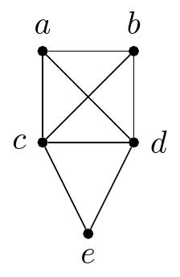(a)\(G_1\)
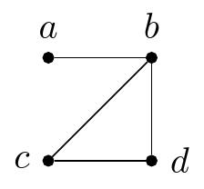(b)\(G_2\)
(c)\(G_3\)
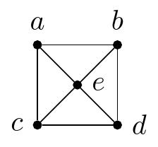(d)\(G_4\)
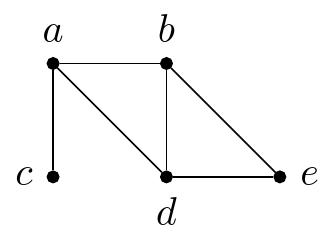(e)\(G_5\)
Figure7.2.16.Chemins et circuits eulériens
Pour montrer l’existance d’un chemin ou d’un circuit eulérien, on peut essayer d’en trouver un. Pour montrer qu’il n’en existe pas, il faut argumenter un peu plus.
Le critère donne une condition suffisante et nécessaire pour l’existance d’une chemin ou d’un circuit eulérien
Proposition7.2.17.
Un graphe \(G\) de trois sommets ou plus possède un circuit eulérien si et seulement si \(\deg(s)\) est pair pour tout sommet \(s\) de \(G\text{.}\)
Un graphe \(G\) possède un chemin eulérien si et seulement si il existe exactement deux sommets de \(G\) ayant un degré impair.
Sous-section7.2.4Chemins et circuits hamiltoniens
Définition7.2.18.
Un chemin hamiltonien d’un graphe \(G\) est un chemin simple allant de \(s\) à \(t\neq s \) passant par tous les sommets de \(G\) exactement une fois.
Un circuit hamiltonien d’un graphe \(G\) est un circuit simple passant par tous les sommets de \(G\) exactement une fois.
Le chemin \(a,e,d,b,c\) est un chemin hamiltonien du graphe \(G_1\text{.}\)
Le chemin \(a,b,c,d\) est un chemin hamiltonien du graphe \(G_2\text{.}\)
Le circuit \(a,c,b,e,f,d,a\) est un circuit hamiltonien du graphe \(G_3\text{.}\)
Le graphe \(G_4\) ne possède ni un chemin hamiltonien, ni un circuit hamiltonien.
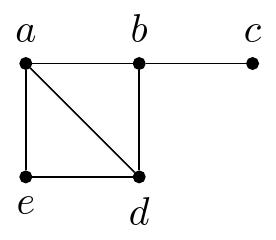(a)\(G_1\)
(b)\(G_2\)
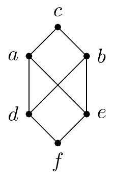(c)\(G_3\)
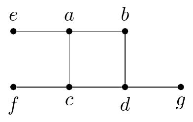(d)\(G_4\)
Figure7.2.20.Chemins et circuits hamiltoniens
Il n’existe pas de condition suffisante et nécessaire à l’exsitance d’une circuit ou d’un chemin hamiltonien. Il existe cependant des conditions suffisantes. En voilà une.
Proposition7.2.21.
Si \(G\) est un graphe à \(n\) sommets avec \(n\geq 3\) tel que \(\deg(s)+\deg(t)\geq n\) pour toute paire de sommets non-adjacent \(u\) et \(v\) de \(G,\) alors \(G\) possède un circuit hamiltonien.
Sous-section7.2.5Isomorphismes de graphes
Définition7.2.22.
Soit \(G_1=(S_1,A_1)\) et \(G_2=(S_2,A_2)\) deux graphes. On dit que \(G_1\) et \(G_2\) sont isomorphe si il existe une fonction \(f:S_1\rightarrow S_2\) telle que:
\(f\) est une bijection;
les sommets \(s\) et \(t\) sont adjacents dans \(G_1\) si et seulement si \(f(s)\) et \(f(t)\) sont adjacents.
On dira alors que \(f \) est un isomorphisme.
Proposition7.2.23.
Soit \(f\) un isomorphisme entre les graphes \(G_1=(S_1,A_1)\) et \(G_2=(S_2,A_2)\text{.}\)
Pour tout sommet \(s\) de \(G_1,\) alors \(\deg(s)=\deg\left(f(s)\right)\text{.}\)
\(\displaystyle |S_1|=|S_2|\)
\(\displaystyle |A_1|=|A_2|\)
Il existe une coloration à \(n\) couleurs de \(G_1\) si et seulement si il existe une coloration de \(G_2\text{.}\)
On peut montrer que les deux graphes ci-dessous ne sont pas isomorphe, car il existe une coloration à deux couleurs pour le graphe \(G,\) mais il faut trois couleurs pour une coloration de \(H\text{.}\)
(a)\(G\)
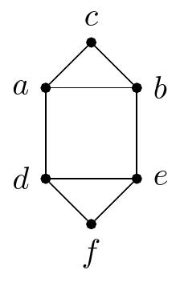(b)\(h\)
Figure7.2.25.Deux graphes non isomorphes
Voici des colorations de ces graphes
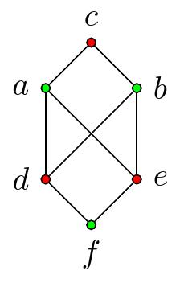(a)\(G\)
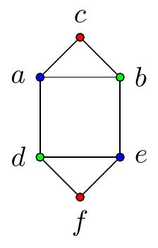(b)\(h\)
Figure7.2.26.Coloration pour différencier des graphes
Voici un exemple de deux graphes qui sont isomorphes
Questions de compréhension de la lecture7.2.6Questions de compréhension de la lecture
Ces questions sont à faire avant de venir en classe et à remettre au début du cours.
1.
Noter toute question qui demeure suite à la lecture de la section et la résolution des exercices ci-dessus ou toute précision/clarification à apporter. Note: cette question est facultative.